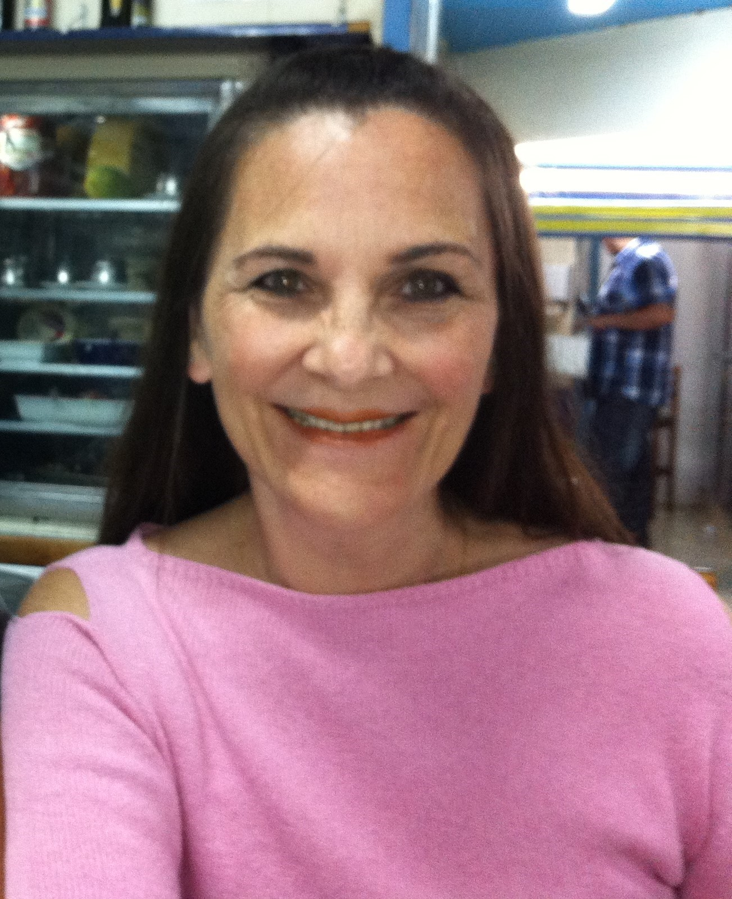

Yara Csordas |
Olá !
Sou a Yara,
uma pessoa apaixonada por Ciência & Tecnologia, que acredita
no progresso da sociedade humana através da busca contínua
do conhecimento, associada à inovação sustentável.
Quer saber sobre mim e meu trabalho ?
Vamos lá !
Capacitação |
Cursos realizados
IdiomasPortuguês ⭐⭐⭐⭐⭐ Inglês ⭐⭐⭐⭐⭐ Francês ⭐⭐⭐⭐ Espanhol ⭐⭐⭐⭐Ferramentas de SoftwareUsuária das seguintes ferramentas :
|
Áreas de
|
P&D, inovação e tecnologia têm sido o centro de minha carreira profissional
há 35 anos. Nesta jornada muito gratificante, tive oportunidade de trabalhar com os seguintes temas:
Gestão da Inovação, de Contratos e de Transferência de Tecnologia.
|
Experiência
|
Ocupei cargos técnicos
e de gestão nas seguintes empresas e Centros de Pesquisa: Gestora de Inovação & Negócios
|
Consultorias |
Desde 1996 atuo como profissional liberal em Engenharia Química
e de Materiais para corporações e órgãos governamentais.
Ofereço serviços de Consultoria no desenvolvimento, produção e aplicações de
materiais avançados, polímeros e biomateriais. Em 2020 me tornei um dos sócios proprietários da RGDYC Consulting, especializada nos temas em que atuo e também em serviços de Engenharia para o mercado alimentício. Algumas consultorias realizadas:
|
Produção
|
|
|
Você poderá saber um pouquinho |
Currículo LinkedInCurrículo Plataforma Lattes |
 Agosto 2021
Agosto 2021